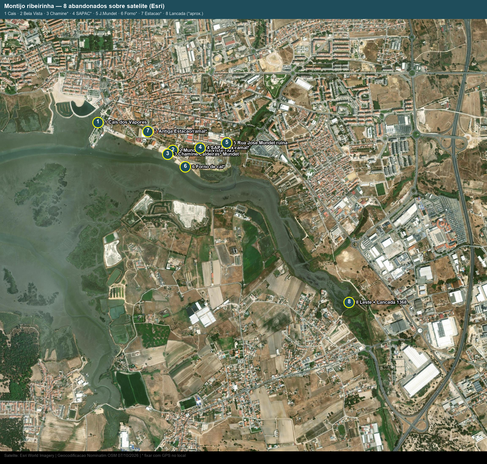

Uso em projeto de arquitetura: base documental, não levantamento. Propriedade, estado estrutural, contaminação, amianto e cotas de maré/cheia exigem visita com GPS, certidões e ensaios. Pontos Nominatim/CM têm coordenada com fonte; aprox. são estimativas ao longo do ex-ramal/margem — fixar no terreno.
1. Mapa numerado — o que cada nº é
| # | Edifício / conjunto | Pista de localização | Estado provável | Coord. | Base |
|---|---|---|---|---|---|
| 1 | Cais dos Vapores — antigo terminal fluvial (467+467+80 m²) | Frente rio, fim da Rua Miguel Pais | Devoluto em transição; protocolo APL→CM 11/06/2025, programa futuro lazer/náutica/restauração | 38.70302, -8.97687 | Nominatim/CM |
| 2 | Mundet Bela Vista — primeiros armazéns cortiça (1923) | Rua da Bela Vista | Naves grandes, estrutura em geral completa, coberturas/interiores a refazer (padrão 2012) | 38.70080, -8.96927 | Nominatim/CM |
| 3 | Chaminé + Caldeiras Mundet — símbolo industrial; parte com exposição desde 2025 | Núcleo Bela Vista, junto ao nº 2 | Chaminé em recuperação CM; Caldeiras com exposição “A cortiça…” (2025), restante devoluto | 38.70050, -8.96980 | aprox. |
| 4 | Faixa SAPAC / ex-ramal — naves em banda | Entre Bela Vista e José Mundet, ao longo da ex-ferrovia | Banda industrial, ocupação fragmentada; confirmar uso atual troço a troço | 38.70100, -8.96650 | aprox. |
| 5 | Rua José Mundet — parcelas ~15 000 + 7 000 m² em ruína | Rua José Mundet, nascente do ramal | Ruína parcial; confirmar existência e limites cadastrais | 38.70139, -8.96380 | Nominatim/CM |
| 6 | Forno de cal + armazéns ribeirinhos | Margem entre Bela Vista e centro, cota baixa | Ruína arqueológica; vulnerável a maré/cheia; valor tipológico | 38.69950, -8.96800 | aprox. |
| 7 | Antiga Estação + ramal Pinhal Novo–Montijo (1908–1989) | Topo da Rua Miguel Pais / eixo do ramal | Estação parcialmente descaracterizada; leito convertido em troços cicláveis; levantar o que resta | 38.70230, -8.97180 | aprox. |
| 8 | Frente leste + Moinho da Lançada (1368) — fábrica completa + moinho mais antigo | Lançada, a leste do centro, margem do esteiro | Fábrica a confirmar; moinho classificado como referência; acesso e maré a verificar | 38.68875, -8.95138 | Nominatim/CM |
Geocodificação: Nominatim OSM 07/10/2026. “Aprox.” = estimativa do autor sobre ex-ramal/margem a partir da tese ULisboa 2012 e CM Montijo — obrigatória confirmação com GPS e PDM/ARU.

Imagem estática: Esri World Imagery (Maxar/GeoEye) via script make_ribeirinha_v2.py, zoom 16. Os números no PNG correspondem aos nºs da tabela e do mapa interativo.
2. Por que abandonou — 5 datas para o projeto
- Até 1930 Aldeia Galega: cais, sal, vinho, pesca, vapor para Lisboa, ~20 matadouros. Rio = economia.
- 1908 ramal + cortiça/carnes: ferrovia fixa indústria junto à água. Anos 70: ~274 fábricas, 5 358 operários.
- 1986 UE + 1988–93: normas sanitárias fecham carnes; plástico e concorrência fecham cortiça (Mundet fecha 1988, insolvência 1993). Ramal encerra 1989.
- 2006–07: passeio ribeirinho Moinho–Cais requalificado, miolo industrial fica por tratar.
- 2025–26: Cais passa para o município (11/06/2025); revitalização aprovada por unanimidade (mar 2026). Janela de projeto aberta.
Fontes: CM Montijo (património industrial, ARU/ORU, PEZOR); tese ULisboa “Requalificação da Frente Ribeirinha do Montijo” (Folgado); dissertações ULusófona 2014 e FA-UL 2012; Diário do Distrito 12/06/2025; O Setubalense 28/10/2022; AMRS Rede Património (Mundet).
3. Ficha mínima a levantar por nº (levar para o terreno)
| O que medir | Como | Porquê no projeto |
|---|---|---|
| Área, vão, pé-direito, estrutura, cobertura, humidade, acesso, cota | Fita + laser + fotos + GPS; comparar com matriz do PPTX | Define se dá para atelier, habitação, equipamento ou só estabilizar |
| Dono, ónus, ARU/PEZOR, condicionantes APL/APA | Certidão + conversa CM/APL + PDF ARU/PEZOR | Sem isto o desenho não é licenciável |
| Amianto, solos, maré/cheia | Despiste visual + ensaios + horário marés SMPC | R/C pode ter de ficar permeável; programa sensível em cima |